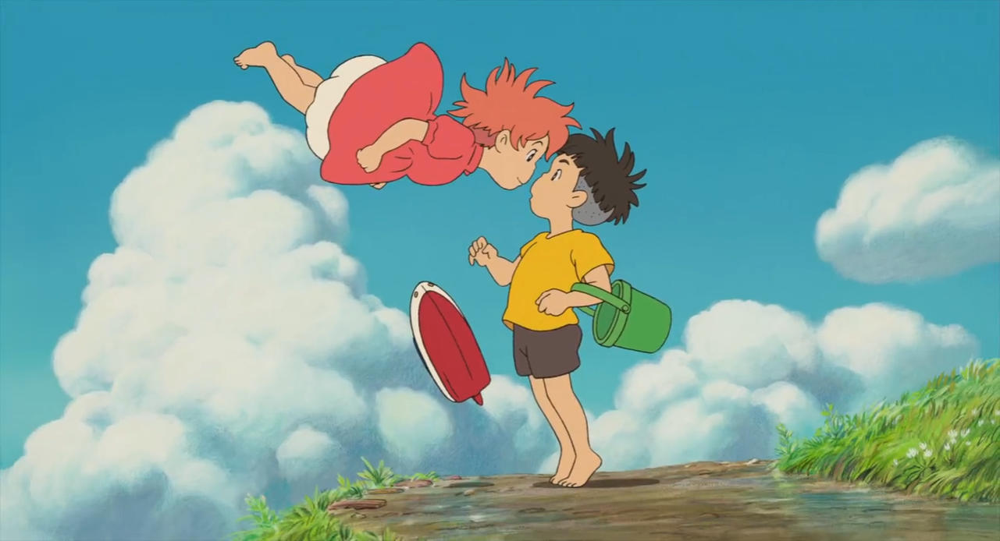
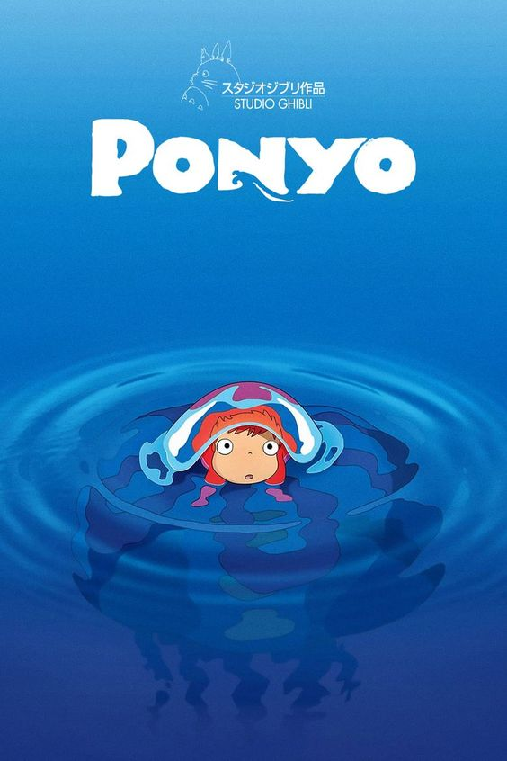
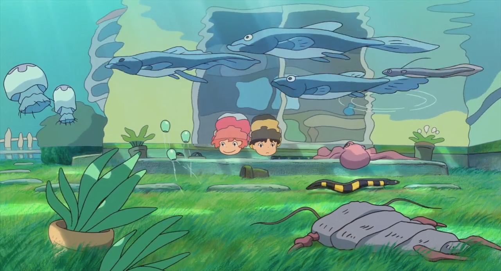

Ponyo
A goldfish named Ponyo sneaks away from her underwater home and, after getting stuck in a jar, is rescued by a five-year-old boy named Sousuke. Though she heals a cut on his finger and becomes his friend, Ponyo's true identity is Brunhilde, the daughter of the sorcerer Fujimoto. Determined to become human, Ponyo uses magic from Sousuke's blood to transform, but this unleashes chaos, disrupting nature and causing the Moon to fall from orbit. As disaster looms, Sousuke must pass an ancient test to restore balance and allow Ponyo to live as a human.
omo
| Japanese Name | 崖の上のポニョ |
| Director | Hayao Miyazaki |
| Producer | Toshio Suzuki |
| Release date | July 19, 2008 |
| Genre | Adventure |
| Fantasy | |
| Status | Released |
| Duration | 101 minutes |
